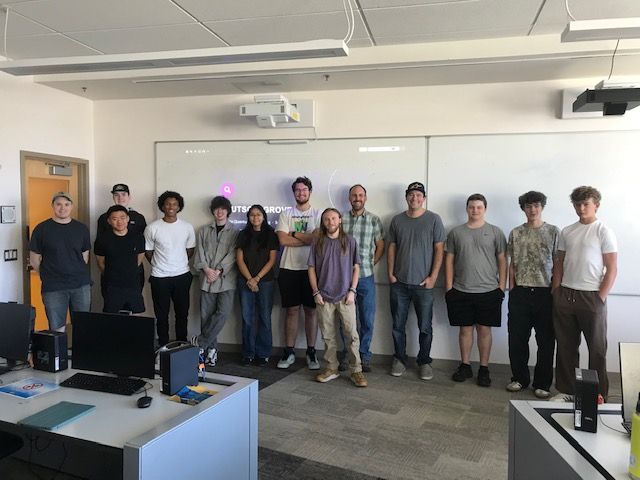

Quantum workshops
Introductory and advanced sessions for high school and college students, using visuals, demos, software, and games.

Fort Lewis College Engineering
Q-SPARK brings quantum computing workshops, mobile lab outreach, and paid student research to high schools, colleges, and communities across Southwest Colorado.
Questions? Email flcspark@fortlewis.edu
What Q-SPARK does
Fort Lewis College is a partner in Elevate Quantum, the U.S. Department of Commerce-designated Quantum Tech Hub for the Mountain West. Through Q-SPARK, FLC Engineering opens up quantum education with workshops, mobile computer lab outreach, faculty-developed curriculum, and applied research — building early pathways into quantum computing, engineering, and advanced STEM for students across the region.
Introductory and advanced sessions for high school and college students, using visuals, demos, software, and games.
Computer-lab-based outreach that travels to rural and regional schools across Southwest Colorado.
Paid undergraduate research and student instructor roles that build real experience in emerging technologies.
Featured video
Watch a session before you bring one to your classroom or campus event.
View all videosWorkshops + events
Teachers, schools, and community partners can request a session. Students can sign up for upcoming workshops, demos, and outreach events.
Photos
Workshops, classroom visits, and student sessions across Southwest Colorado and the Four Corners.
Regional impact
Contact
Ask about workshops, classroom visits, guest speakers, student research, and regional education partnerships.